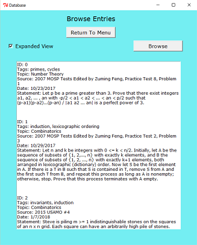
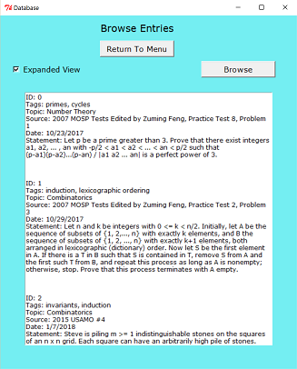

The database opens with a menu page and the following buttons: "Look Up An Entry"; "Browse Entries"; "Add An Entry"; and "Edit An Entry".
The project was inspired by this post by v_Enhance on the website Art of Problem Solving.
The application begins with the menu shown above. All other page frames have return buttons back to this page. Clicking "Look Up An Entry" brings you to the following frame in the first image below. As mentioned above, you can make queries based on ID in the database or one of the "Add Entry" attributes described above. When the corresponding check box is clicked, an entry widget appears to input data. If no items match the search conditions, then a message to this effect appears in the following text box. Otherwise, a series of search results appears, as seen in the second image below. An "expanded view" check button can be used to toggle between abridged and complete forms of data entries. Warnings will be given for invalid or out-of-range IDs or dates.
Note that the "Mentioned Words" and "Source" fields will select entries which match any single searched word (even among many).


Clicking "Browse Entries" brings you to the following frame in the first image below. Clicking "Browse" will provide a list of all entries in the database as seen in the second image below. Similar to "Look Up An Entry", clicking the "Expanded View" button will provide more information about items.
 

Clicking "Add An Entry" brings you to the following frame in the first image below. The fields for a new data entry match those on the "Look Up An Entry" page, as seen in the second image below. The entry can be cancelled or saved, after which you return to the menu. Warnings are provided for invalid date entries. The collection of all data entries is kept in a JSON file as a list of "DataEntry" objects (which is stored in the form of a list of Python dictionaries for serialization).


Clicking "Edit An Entry" brings you to the following frame in the first image below. Input an ID and click "Edit" to update an entry. The fields will be populated with the corresponding data, as shown below in the second image. If the ID is invalid or out of range then a warning appears. Similarly, warnings appear for updating a date to an invalid choice. When finished updating, click the save button. If you do not wish to keep the changes, cancel. In both cases, you will return to the menu page.


Python must be installed on your computer to run the application. If you do not have it installed, you can download it for free. For details, see this page. For reference, this project was created using Python version 3.1.
If you are running an operating system other than Windows, then you may have to download and install additional software to accommodate the Tkinter toolkit. To learn more or to trouble shoot, see these pages:
To download the project, you can clone the repository using this terminal command:
git clone https://github.com/wbchristerson/database.git
Alternatively, follow the instructions below to download to a hard drive:
database-master in your Downloads folder or wherever it was placed on your device.database-master, enter database-master again, then double click database.py. The menu will appear.
Note: The project comes with sample database entries to illustrate
how the application works. If you wish to delete these entries and
begin with a completely blank database, double click the file
delete_database.py. A window will open, prompting you
to confirm that you wish to delete all existing entries. To
continue, type 'y'. To cancel, type 'n'. For a more aesthetically
pleasing presentation of the original problems in the database,
see sample_problems.pdf.

The game begins with an introductory page explaining how to play. It also lists the player's possible avatars, along with which keys to press to switch avatars. Begin by pressing the "space" key.

The game page includes a background of grass, brick, and water. Your score, remaining lives, and level appear at the bottom. You have to cross the board while avoiding enemy bugs. Gems and stars appear occasionally, and you get points for every gem you collect: 3 for blue gems, 6 for green gems, and 9 for orange gems.

The end page resembles the introductory page and congratulates you on completing the game.

The game becomes increasingly difficult. The chance of each of three independent rocks appearing on screen increases up to level 5, after which time they will all always appear (though sometimes overlapping each other). One strategy to avoid losing lives is to wait for the right half of the screen to become clear and cross from that half (since enemy bugs always cross the screen from left to right). To further increase difficulty beyond level 5, a fourth rock will always appear somewhere in the rightmost column.
Run the application in your browser by clicking here. To download, clone the repository using this terminal command:
git clone https://github.com/wbchristerson/arcade-game.git
Alternatively, follow the instructions below to download to a hard drive:
arcade-game-master in your Downloads folder or wherever it was placed on your device.Ctrl + O (for Windows machines) to open the file selector on your device.arcade-game-master, enter arcade-game-master again, then select index.html. The game screen will appear.
The main screen includes a timer, a move counter, a reset button, and a star rating. Below is an example of the interface:
Finishing with at most 15 moves yields a 3-star rating, finishing with more than 16 moves but at most 25 yields a 2-star rating, and finishing with more than 25 moves yields a 1-star rating. Here is an example end page:

Run the application in your browser by clicking here. To download, clone the repository using this terminal command:
git clone https://github.com/wbchristerson/memory-game.git
Alternatively, follow the instructions below to download to a hard drive:
memory-game-master in your Downloads folder or wherever it was placed on your device.Ctrl + O (for Windows machines) to open the file selector on your device.memory-game-master, enter memory-game-master again, then select index.html. The game screen will appear.
The application is a single page which begins with no shown grid and a default color of black.

The dimensions of the grid are determined by an input element, which is designed to ensure that you can only enter a number between 1 and 50.

By clicking on the color option, a window appears which shows the various colors that can be generated.

Color the grid by clicking on individual pixels:

Run the application in your browser by clicking here. To download, clone the repository using this terminal command:
git clone https://github.com/wbchristerson/pixel-art.git
Alternatively, follow the instructions below to download to a hard drive: